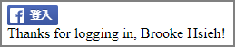
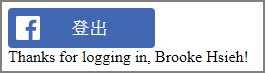

Facebook 登入
本篇只是玩玩「Facebook 登入」的 API 接法，參考範例如下
一、Facebook 登入
<!DOCTYPE html> <html> <head> <title>Facebook Login JavaScript Example</title> <meta charset="UTF-8"> </head> <body> <script> // This is called with the results from from FB.getLoginStatus(). function statusChangeCallback(response) { console.log('statusChangeCallback'); console.log(response); // The response object is returned with a status field that lets the // app know the current login status of the person. // Full docs on the response object can be found in the documentation // for FB.getLoginStatus(). if (response.status === 'connected') { // Logged into your app and Facebook. testAPI(); } else { // The person is not logged into your app or we are unable to tell. document.getElementById('status').innerHTML = 'Please log ' + 'into this app.'; } } // This function is called when someone finishes with the Login // Button. See the onlogin handler attached to it in the sample // code below. function checkLoginState() { FB.getLoginStatus(function (response) { statusChangeCallback(response); }); } window.fbAsyncInit = function () { FB.init({ appId: '507757903070000', cookie: true, // enable cookies to allow the server to access // the session xfbml: true, // parse social plugins on this page version: 'v3.2' // use graph api version 2.8 }); // Now that we've initialized the JavaScript SDK, we call // FB.getLoginStatus(). This function gets the state of the // person visiting this page and can return one of three states to // the callback you provide. They can be: // // 1. Logged into your app ('connected') // 2. Logged into Facebook, but not your app ('not_authorized') // 3. Not logged into Facebook and can't tell if they are logged into // your app or not. // // These three cases are handled in the callback function. FB.getLoginStatus(function (response) { statusChangeCallback(response); }); }; // Load the SDK asynchronously (function (d, s, id) { var js, fjs = d.getElementsByTagName(s)[0]; if (d.getElementById(id)) return; js = d.createElement(s); js.id = id; js.src = "https://connect.facebook.net/zh_TW/sdk.js"; fjs.parentNode.insertBefore(js, fjs); }(document, 'script', 'facebook-jssdk')); // Here we run a very simple test of the Graph API after login is // successful. See statusChangeCallback() for when this call is made. function testAPI() { console.log('Welcome! Fetching your information.... '); FB.api('/me', function (response) { console.log('Successful login for: ' + response.name); document.getElementById('status').innerHTML = 'Thanks for logging in, ' + response.name + '!'; }); } </script> <!-- Below we include the Login Button social plugin. This button uses the JavaScript SDK to present a graphical Login button that triggers the FB.login() function when clicked. --> <fb:login-button scope="public_profile,email" onlogin="checkLoginState();"> </fb:login-button> <div id="status"> status </div> </body> </html>

二、客製化登入按紐
<!DOCTYPE html> <html> <head> <title>Facebook Login JavaScript Example</title> <meta charset="UTF-8"> </head> <body> <script> // This is called with the results from from FB.getLoginStatus(). function statusChangeCallback(response) { console.log('statusChangeCallback'); console.log(response); // The response object is returned with a status field that lets the // app know the current login status of the person. // Full docs on the response object can be found in the documentation // for FB.getLoginStatus(). if (response.status === 'connected') { // Logged into your app and Facebook. testAPI(); } else { // The person is not logged into your app or we are unable to tell. document.getElementById('status').innerHTML = 'Please log ' + 'into this app.'; } } // This function is called when someone finishes with the Login // Button. See the onlogin handler attached to it in the sample // code below. function checkLoginState() { FB.getLoginStatus(function (response) { statusChangeCallback(response); }); } window.fbAsyncInit = function () { // Now that we've initialized the JavaScript SDK, we call // FB.getLoginStatus(). This function gets the state of the // person visiting this page and can return one of three states to // the callback you provide. They can be: // // 1. Logged into your app ('connected') // 2. Logged into Facebook, but not your app ('not_authorized') // 3. Not logged into Facebook and can't tell if they are logged into // your app or not. // // These three cases are handled in the callback function. FB.getLoginStatus(function (response) { statusChangeCallback(response); }); }; // Load the SDK asynchronously (function (d, s, id) { var js, fjs = d.getElementsByTagName(s)[0]; if (d.getElementById(id)) return; js = d.createElement(s); js.id = id; js.src = 'https://connect.facebook.net/zh_TW/sdk.js#xfbml=1&version=v3.2&appId=507757903070000&autoLogAppEvents=1'; fjs.parentNode.insertBefore(js, fjs); }(document, 'script', 'facebook-jssdk')); // Here we run a very simple test of the Graph API after login is // successful. See statusChangeCallback() for when this call is made. function testAPI() { console.log('Welcome! Fetching your information.... '); FB.api('/me', function (response) { console.log('Successful login for: ' + response.name); document.getElementById('status').innerHTML = 'Thanks for logging in, ' + response.name + '!'; }); } </script> <!-- Below we include the Login Button social plugin. This button uses the JavaScript SDK to present a graphical Login button that triggers the FB.login() function when clicked. --> <div class="fb-login-button" data-max-rows="1" data-size="large" data-button-type="login_with" data-show-faces="false" data-auto-logout-link="true" data-use-continue-as="false" scope="public_profile,email" onlogin="checkLoginState();"></div> <div id="status"> status </div> </body> </html>

參考資料：